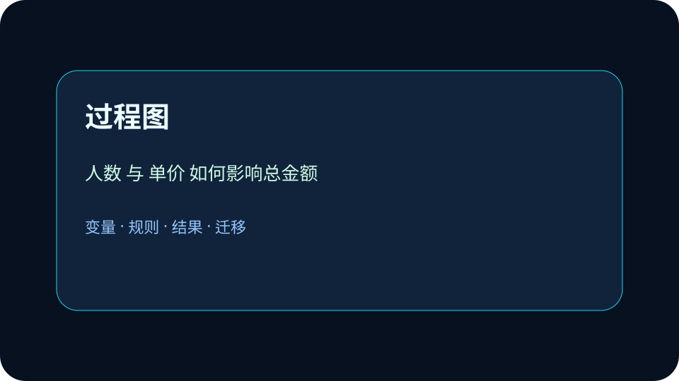

Application
应用场景：把抽象概念放回可验证的真实任务。
真实应用：把概念迁移到校园系统
变量像贴了标签的抽屉，类型像抽屉的形状。 请把本课方法迁移到一个新的校园场景：选课、借书、门禁或成绩查询。你的方案至少写出三个部分：数据从哪里来，规则如何处理，结果怎样被检查。如果发现结果异常，要能回到变量和规则重新诊断。
为什么同一个数字，放进不同变量类型，程序的行为会完全不同？
选择后，AI 学伴会围绕你的卡点给提示。
❓ 为什么变量要分类型？不都是存东西吗？
❓ int和float有啥区别？整数也能用小数存啊？
❓ char类型为啥不能直接存'你好'？
学完这一课，这些问题你都能自信地回答。
已经知道：学生在数学课已使用x/y表示未知数，Excel中接触过单元格命名引用，且熟悉整数、小数等数值分类
但问题是：难以理解为何要显式声明数据类型，常混淆字符串与数值的运算符差异（如'+'拼接/相加），对布尔值参与逻辑运算感到陌生
所以学：校园食堂要做排队结算小程序：人数、金额、是否会员、菜品名称都要被程序准确记录。
下面哪一项最适合用布尔类型保存？
变量像贴了标签的抽屉，类型像抽屉的形状。 请把本课方法迁移到一个新的校园场景：选课、借书、门禁或成绩查询。你的方案至少写出三个部分：数据从哪里来，规则如何处理，结果怎样被检查。如果发现结果异常，要能回到变量和规则重新诊断。
测量不同数据类型在内存中的占用字节数
规范定义：变量是指程序中用来保存数据并可被读取或修改的命名存储位置；数据类型决定数据能参与哪些运算。
机制解释：先给信息命名，再选择类型，最后让表达式按类型规则运算。数值、文本、布尔值和列表承担不同角色。
处理用户输入半径求圆面积：1)接收输入radius_str='3.5'；2)转为浮点数radius=float(radius_str)；3)计算area=3.14*radius**2得38.465。关键点：输入默认为字符串必须转换，浮点数保证小数运算精度，乘方运算需数值类型支持。

变量在代码中表现为 name=16，包含名称、类型和当前值三要素
整数运算 age+1 与字符串运算 name+'1' 因类型不同产生截然不同结果
类型转换 int('16') 将字符串转为整数，使后续数值比较成为可能
用户输入默认为字符串，计算BMI需先将身高体重转为浮点数
设计一个“社团报名统计”变量表，说明每个字段的数据类型和用途。
提交后会检查是否包含变量、规则和结果。
真实计算机原理：同样 4 个字节，按 int、float 或 4 个 char 解释，含义完全不同——类型决定了数据的解释方式。
💡 探究任务：对比三种类型在 4 字节下能表示的取值范围量级，解释为什么把金额存成 float 会出计算误差。
下列哪组操作符对浮点数有效而对字符串无效？
先独立作答，再点选项查看对错与错因。
存储风速数据3m/s时，最合适的变量定义方式是
计算周平均温度时，发现结果总是整数，可能原因是
湿度数据60%在内存中的存储形式是
将用户输入的字符串温度转换为浮点数的代码是：temp = ____(input())
答案：float
float()函数实现类型转换
声明布尔型变量记录是否下雨：is_raining = ____
答案：True/False
布尔值必须首字母大写
处理用户输入的体重(kg)和身高(m)计算BMI时，必须确保：
把输入框得到的“5”当数字 5 直接相加，结果可能变成字符串拼接。
只看表面语法，没检查前提和数据流。
先问变量是什么，再问规则是否成立。
✅ 错因1：混淆变量名与变量值，如认为`a=1; b=a`后修改`a`会影响`b`（实际是值拷贝）
✅ 100
✅ 100100
✅ 3.8
变量像贴了标签的抽屉，类型像抽屉的形状：数字抽屉能计算，文字抽屉能拼接，真假抽屉能判断。
视频回顾本课主线：真实场景、概念定义、变量模型、迁移应用。
指出代码错误：age='16'; adult=age>18（应转换类型）
分析温度转换程序为何出错：celsius='37.5'; fahr=celsius*9/5+32（类型不匹配）
设计学生成绩统计程序：用合适类型存储姓名(str)、分数(float)、是否及格(bool)